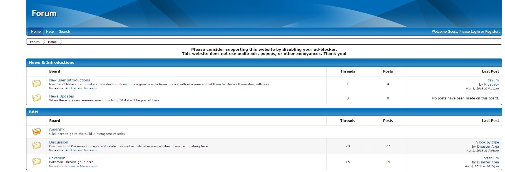
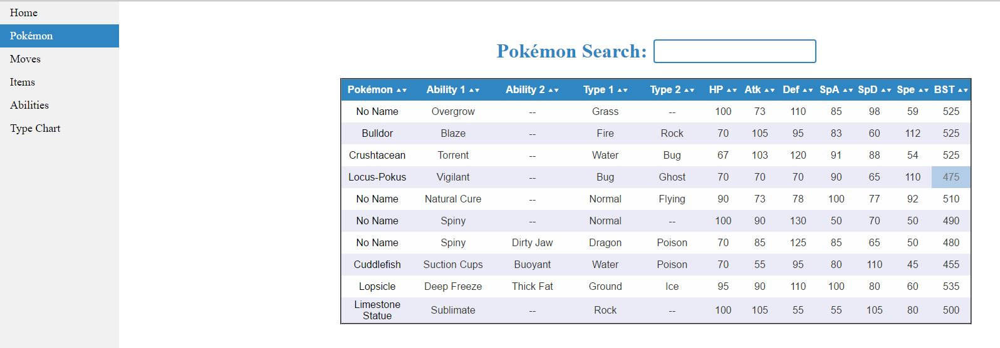

Build A Metagame
BUILD A METAGAME (BAM) IS A POKEMON FAKEDEX FOCUSED ON CREATING A NEW COMPETATIVE POKEMON METAGAME. WE HAVE OUR OWN FORUM AND POKEDEX AND WILL BE ON POKEMON SHOWDOWN OR POKEBATTLE SOON.

BAM Forum
The BAM forum is where we discuss our ideas and record them, everthing from moves, to item to the pokemon themselves all have a place for discussion. It also has a chat for you to talk to us live if you wish. It's also a good way to learn about the project and get involved youself. We also need spriters so if you know how to make pixal art please sign up on the forum and make a introduction thread. See the forum here.
BAMDEX
The BAMDEX is BAM's version of the smogdex, made by scratch by myself ouside of a JS file for sortable tables and searchable tables. It has tables of all types of pokemon and BAM information that are sortable and have search bars. I update it weekly and make progress on the moves list when I have time. I plan on making a master search and a homepage after the moves list is completed. View it here.